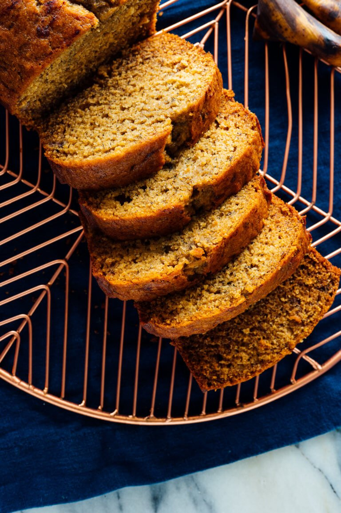

Banana Bread

Recipe by Cookie and Kate
Description
A delicious and healthy banana bread recipe. This recipe uses whole food ingredients so that you can indulge without feeling guilty
Ingredients
- ⅓ cup (75 grams) melted coconut oil or extra-virgin olive oil or high quality vegetable oil*
- ½ cup honey (168 grams) or maple syrup (155 grams)
- 2 eggs
- 1 cup (225 grams) mashed ripe bananas (about 2 ½ medium or 2 large bananas)
- ¼ cup (56 grams) milk of choice or water
- 1 teaspoon baking soda (NOT baking powder; they aren’t the same!)
- 1 teaspoon vanilla extract
- ½ teaspoon salt
- ½ teaspoon ground cinnamon, plus more to swirl on top
- 1 ¾ cups (220 grams) white whole wheat flour or regular whole wheat flour**
- Totally optional: ½ cup mix-ins like chopped walnuts or pecans, chocolate chips, raisins, chopped dried fruit, fresh banana slices…
Steps
- Preheat oven to 325 degrees Fahrenheit (165 degrees Celsius) and grease a 9×5-inch loaf pan.
- In a large bowl, beat the oil and honey together with a whisk. Add the eggs and beat well, then whisk in the mashed bananas and milk. (If your coconut oil solidifies on contact with cold ingredients, simply let the bowl rest in a warm place for a few minutes, like on top of your stove, or warm it for about 10 seconds in the microwave.)
- Add the baking soda, vanilla, salt and cinnamon, and whisk to blend. Lastly, switch to a big spoon and stir in the flour, just until combined. Some lumps are ok! If you’re adding any additional mix-ins, gently fold them in now.
- Pour the batter into your greased loaf pan and sprinkle lightly with cinnamon. If you’d like a pretty swirled effect, run the tip of a knife across the batter in a zig-zag pattern.
- Bake for 55 to 60 minutes, or until a toothpick inserted into the center comes out clean (typically, if I haven’t added any mix-ins, my bread is done at 55 minutes; if I have added mix-ins, it needs closer to 60 minutes). Let the bread cool in the loaf pan for at least 10 minutes. You may need to run a butter knife around the edges to loosen the bread from the pan. Carefully transfer the loaf to a wire rack to cool before slicing.
Home